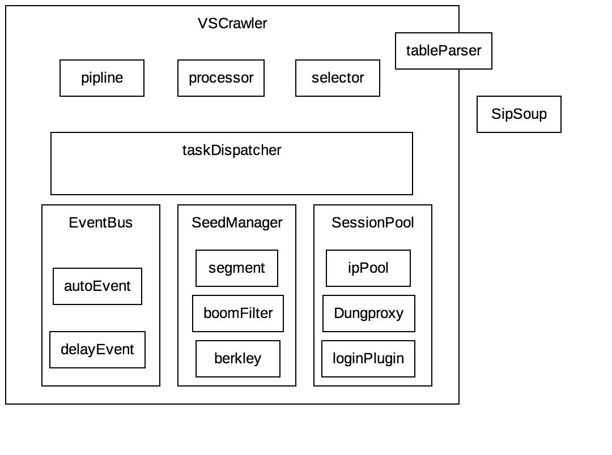

VSCrawler
VSCrawler是一个适合用作抓取的爬虫框架，在更多场景倾向于功能扩展性而牺牲使用简便性。这让VSCrawler非常强大，让他可以灵活的应对目标网站的反爬虫策略。为了方便描述，文档中可能使用VS替代VSCrawler作为VSCrawler简写
交流于参与：
QQ群：569543649(VS系列统一交流群，目前包含DungProxy，VSCrawler，SipSoup三个项目)
概述
VSCrawler是我业余时间维护的爬虫框架，发展自WebMagic，中途受到了WebCollector，JsoupXpath，geccocrawler等项目的影响。在考虑如何突破爬虫封堵的情况下，结合了这些框架而实现的。但是VSCrawler绝不是这些项目的复制版本，他的使用和绝大部分爬虫框架都不相同，如果你习惯WebMagic，也不一定能够很容易上手VSCrawler。
基本结构

vs分为三个核心组件，两个用户扩展组件。其中大部分组件都可以和webMagic对应起来，但是又和webMagic有着巨大差异。
seedManager
这个类似webMagic的scheduler，用来管理种子数据，按照字面意思理解，就是确定下一个将会被处理的URL是哪个。webMagic的scheduler大致分为hashSet，redis，fileCache几种。分别实现内存URL存储，分布式支持，断点续爬的功能。但是对于seedManager来说，似乎同时有了三个功能。它使用berkleyDB管理种子，类似于redis的内存key-value数据库，在保证快速访问的同时，提供了到本地磁盘的实时序列化。在vs2.0计划接入分布式框架之后，seedManager将会无redis实现分布式。
除此之外，bloomFilter作为了必选消重组件，高效实现消重。segment基于时间分片，允许任务在不同时间维护重复出现，实现增量抓取功能。内置seedKeyResolver则方便用户实现消重规则自定义，彻底解决webmagic中消重规则定义困难的问题。
EventBus
事件总线是VS的一个核心驱动组件，设计它的原因是在使用webMagic的时候，发现很多时候功能找不到扩展点。因为WebMagic为了让用户使用简单，在Spider本身对象上面实现build，导致buider只能是存粹的setter，无逻辑builder使得它定义扩展点非常困难。通俗来说，当一个对象某个部件发生变化了，可能设计一系列的依赖对象重新计算。这就是一般的builder，或者复杂点儿的叫做factory。然而webMagic的Spider只有setter，没有build。
VS在设计的时候，单独抽取了一个VSCrawlerBuilder用于构造爬虫对象，但是之后，还是发现在爬虫运行时，也有可能需要在爬虫部件之间传递信息，考虑耦合性最低的中间件是啥？一般都是mq，所以借此实现一个简单的异步消息通知机制，这就是EventBus。EventBus设计思路来源于Android，MFC这类界面程序的事件循环，目前EventBus设计已经进过好几次重构，实现的功能包括：异步\同步事件投递、基于接口的自动事件投递、延时事件.同时基于事件机制很容易实现插件扩展（自动登录模块就是一个插件，基于自动事件机制接入主流程）
SessionPool
这个类似于webMagic的downloader，但是他的逻辑远远比downloader复杂，他是VS最核心的根本，VS实现反抓取突破的基础。SessionPool维护了多个session，session是VS关于一个用户的抽象，当然用户可以是实际存在的账户，也可以是不存在但是VS控制个数的账户。SessionPool会保证每个session在分配的时候，都是可用的，同时会管理每个session的生命周期，何时可以重用、最多能用多少次等。
SessionPool在VSCrawler中，被划分在网络层中。他的底层直接对接了DungProxy，可以有DungProxy的代理IP池支持，以及方便的HttpClient封装功能。SessionPool的代理模式分为四种，足够实现各类场景的代理绑定策略。同时关于代理，代理池都是可拆卸的接口实现。允许被随意替换
Seesion内部包含一个httpclient，这个httpclient被定制过，有大量直接使用的get、post方法可以使用。最主要的是，我并没有对httpclient做任何功能限制，包括HttpClientBuilder构造httpclient、以及使用httpclient原声方法访问网络，他仍然是一个普通的HttpClient，当你使用这个功能的时候，相信你会明白VSCrawler和WebMagic在设计理念上的不同了。
pipline
这个没啥好说的，这是要给抓取结果输出管道的扩展。和其他框架没有的区别，不过也是爬虫一个很重要的扩展点
processor
处理器和webMgic中的processor不完全一样，差异是WebMagic的Processor可以定义为PageProcessor，VSCrawer定义为SeedProcessor。WebMagic希望他是如何解析页面内容的扩展，VS则是考虑如何处理种子，那么VS包括数据下载（可能多次交互以及加解密逻辑），数据解析两个步骤。也就是说，SeedProcesor＝webMagic.downloader+webMagic.processor
我给你一个httpclient，你手动调用一下网络请求拿到数据，一句话的事儿，框架放弃控制带来了不知道多少扩展性。
selector
selector讲真不算是一个核心组件，他是processor的一个支撑服务，但是selector决定了一个爬虫框架最终的用户群体数量。因为用户写爬虫，最不能统一抽象的就是页面解析，页面解析器直接影响了爬虫开发效率。
VS的selector目前有两个方向的尝试，包括在css、xpath上面的整合sipSoup,在表格抽取的封装（TableEvaluator）。其中sipSoup已经自VSCrawler中剥离出来了，他也是在XSoup和JSoupXpath的基础上重构而来。也是我很得意的一个项目，并且他完全可以替代其他两个Xpath框架（XSoup提供了桥接器桥接器地址，SipSoup主架构自JsoupXpath发展而来）
selector后面可能考虑继承模块框架，实现基于配置的爬虫
最后说点儿啥
求勾搭： virjar@virjar.com